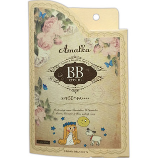

返回列表
产品名称：アマールカ ＢＢクリーム

アクアキューブ アマールカ ＢＢクリーム オークル
メーカー アクアキューブ
JANコード 4562352080124
商品の特徴
SPF50＋・PA＋＋＋＋
- 成分・分量
- ＜全成分＞
水、シクロペンタシロキサン、PEG-9ポリジメチルシロキシエチルジメチコン、BG、ジメチコン、t-ブチルメトキシジベンゾイルメタン、PEG-10ジメチコン、ジフェニルシロキシフェニルトリメチコン、ソルビトール、イソステアリン酸、エタノール、グリセリン、ラベンダー花／葉／茎エキス、ヒアルロン酸Na、アルニカ花エキス、アロエベラ葉エキス、フユボダイジュ花エキス、カミツレ花エキス、グリチルリチン酸2K、ホホバ種子油、イソノナン酸イソトリデシル、スクワラン、アクリレーツクロスポリマー、セチルジメチコンコポリオール、硫酸Mg、（ビニルジメチコン／メチコンシルセスキオキサン）クロスポリマー、メタケイ酸アルミン酸Mg、トリエトキシカプリリルシラン、ハイドロゲンジメチコン、メチコン、（ジメチコン／メチコン）コポリマー、ホウケイ酸（Ca／Na）、（HDI／トリメチロールヘキシルラクトン）クロスポリマー、酸化銀、ジステアルジモニウムヘクトライト、PEG-9ジメチコン、ポリソルベート80、クエン酸Na、トコフェロール、フェノキシエタノール、（＋／－）、タルク、酸化チタン、水酸化Al、酸化亜鉛、硫酸Ba、酸化鉄、シリカ
- 用法及び用量
- 化粧水などでお肌を整えた後、適量を手に取り、顔全体になじませてください。フェイスパウダーを上から重ねるとよりキレイに仕上がります。